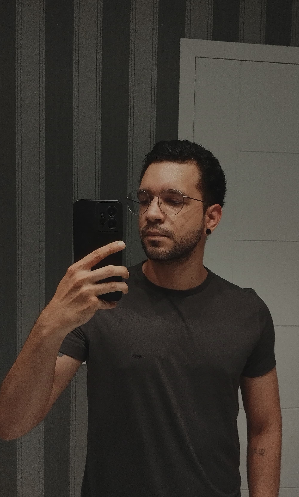

Professores:
Ciência da Natureza
Professora Marcela - Química
Professora Marcela de Castro Noqueira Diniz Pontes. Formada em química-bacharelado e licenciatura, pela
USP-Universidade de São Paulo, tem mestrado e doutorado em química orgãnica, pela UFRN na área de produtos
naturais. Atua no ensino da disciplina de química no nível de Ensino Médio e no ensino de CiÊncia da
Natureza no nível EJA, na modalidade Educação do Campo.

Professor Marcelo - Biologia
Licenciado em Ciências Biológicas pela UFRN. Especialista na Educação Ambiental e Patrimunial pelo IFESP.
Atua como professor nas áreas de ciências da naturezas (Biologia) e área tecnica (Informática Básica).

Professora Manuela - Biologia
Graduada em Ciências Biológicas. Com especialização em Educação Ambiental atua como professora efetiva na
rede Estadual do RN. Possui esperiencia em cordenação de equipes e gestão de projetos.

Física (sem professor)
Matemática
Professor Leonardo - Matemática
Professor Leonardo Ângelo, graduado em matemática pela UFRN, atuou como professor tutor do curso de graduação
a distancia pela UFRN. há 15 anos atuando como professor de escolas particulares e cursinhos, e a 5 anos
como professor da rede Estadual e no CEEP-HXV.

Professor Joelson - Matemática
Graduação em matemática pela Universidade Portiguar-UNP e atua há 30 anos na rede Estadual e Privada.

Linguagens
Professor Eber - Português
Licenciado em língua portuguesa e literatura pela UFRN (2007). Lesionou cursos preparatórios para concursos,
IFRN e ENEM. Concursado no Estado do RN desde 2012, atualmente integra do corpo docente do CEEP-HXV. Encaro
a educação como a principal força de transformação pessoal, social e profissional.

Professora Ana Guerra - Português
Ana Amélia Guerra é graduada em letras pela UFAM, mestre em literatura comparada pela UFRN e doutora em
Ciência da literatura pela UFRJ com estágio de pesquisa de pesquisa na Sorbonne Nouvelle - Paris TTI - por
12 meses. Tem larga experiência no Ensino Público Superior.

Professor Lucas - Inglês
Professor de língua inglesa com formação em letras inglês/português. Já atuei como professor de idiomas e no
Ensino Médio.

Professor daniel - Educaçâo Física
Formação Acadêmica: Licenciado e bacharel em educaçâo física pela UFRN. Possuo experiência na área de
educaçâo física escolar, fitness, saúde e bem-estar.
Professor Lula - Artes
Luis Antônio Dias Borges (Lula Borges) é doutorando em ciências da educaçâo pela WUE(2022): Mestre em Ensino
das Artes pela UFRN(2020): Mestre em ciências da educaçâo, pela UGF(2013): especialista em cinema pela
UFRN(2017): graduado em educação artísticas, habilitação em artes visuais, pela UFRN(1999). Atua como
professor de artes do Ensino Médio na SEEC/RN, músico, modelador 3D, desenhista, animador 2D, editor,
cineasta e colorista.